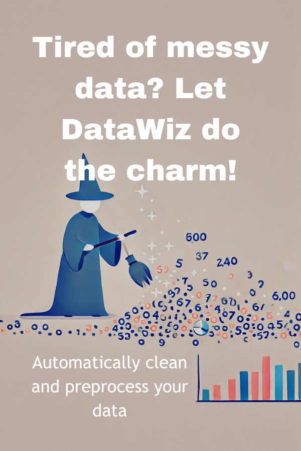
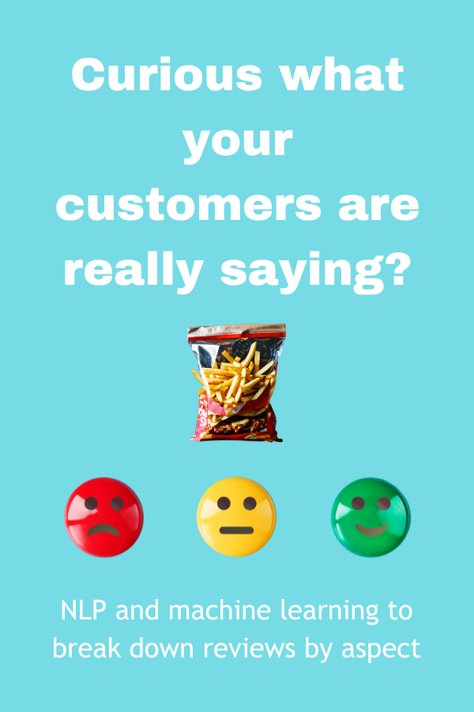
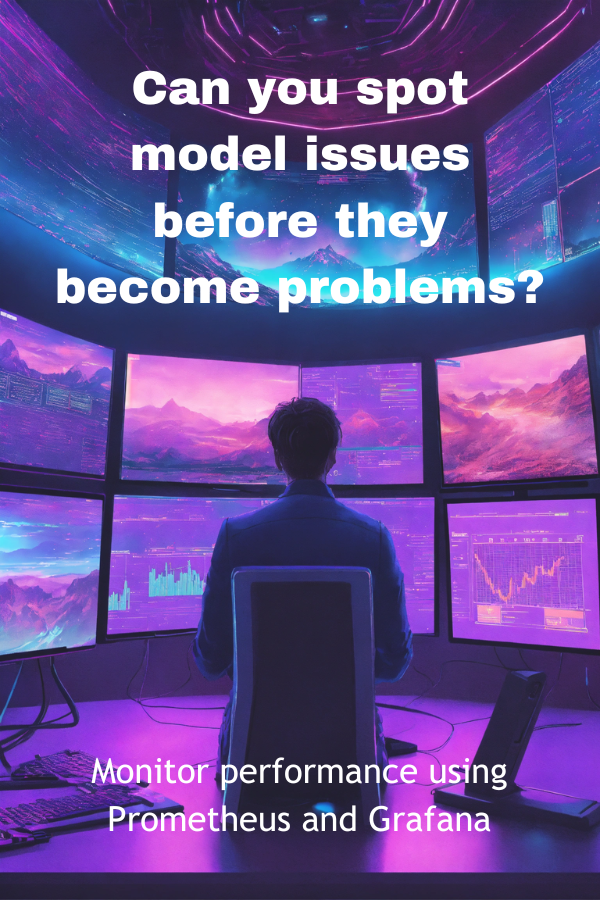
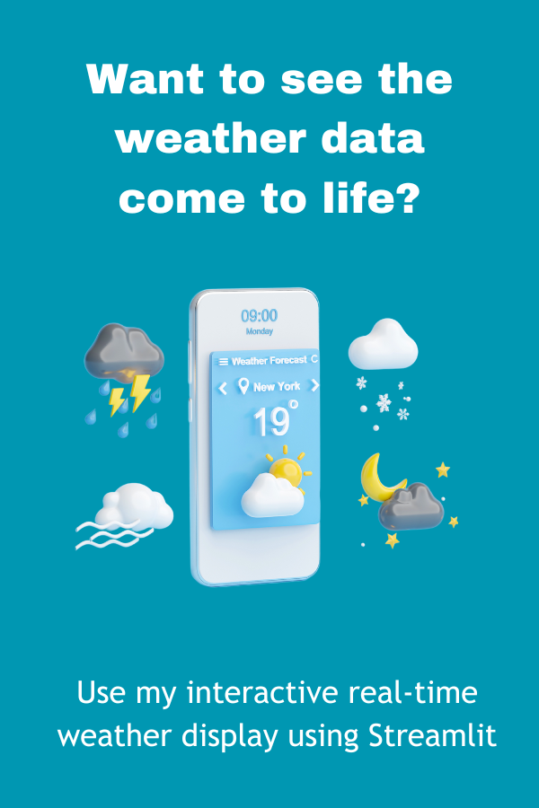
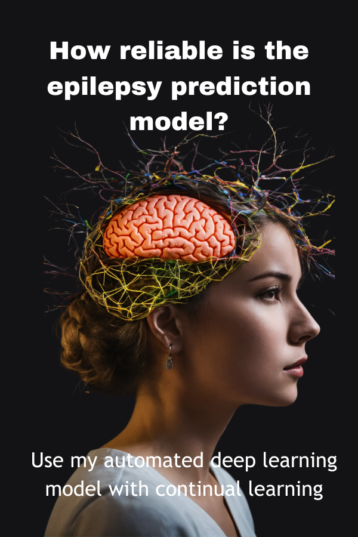
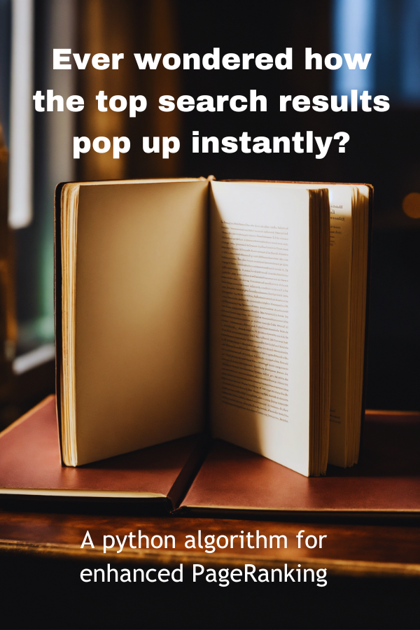

< Developer />
BIKASH CHANDRA SAHOO
M.Tech in Big Data Analytics from VIT Chennai · Published in IEEE & Springer · I engineer the gap between data science and deployable AI.
Open to Data/AI engineering, ML backend, and applied research roles.
01
About
The journey from signals to systems.
Army Institute of Tech, Pune
B.E. Electronics & Telecom, CGPA 8.96
Where signals met systemsIndustry & self-learning
Python, data science, and applied engineering practice
The pivot beginsVIT Chennai
M.Tech Big Data Analytics, CGPA 9.42, Rank 2
Where data became a craftCalifornia Institute of Genetics
Parkinson's AI research with 92.4% accuracy
AI meets medicineOutlier
AI Code Reviewer, SFT for frontier models
Teaching AI to write better codeZaalima Development
Fraud Detection 95% and AI Resume Screener 92%
ML into productionSumprio Technologies
Django CRM backend with 25% performance gain
Shipped backend at scaleFrom decoding electrical signals to building neural networks - every step was deliberate.
02
Work
10 systems built. Each one asked a question worth answering.


Aspect-Based Sentiment Analysis
NLP pipeline breaking product reviews down by aspect using ML
View on GitHub


IEEE Access 2025
Epilepsy Seizure Predictor
Deep learning on EEG signals with continual learning
View on GitHubSpringer 2025
Quantum Stock Predictor
Variational quantum circuit for stock price prediction
View on GitHub
03
Skills
Tools grouped by the work they support.
04
Experience
Where production pressure met AI judgment.
Sumprio Technologies Pvt. Ltd. Backend Developer
Designed and optimized backend APIs for a Django-based CRM, improving data flow efficiency and system reliability. Conducted Apache JMeter stress testing and improved response time by 25%. Implemented unit testing, JIRA workflows, and Confluence documentation.
Zaalima Development ML Engineer Intern
Built a Random Forest and XGBoost fraud detection system reaching 95% accuracy, plus an AI resume screening system using spaCy, TF-IDF, and BERT at 92% accuracy.
Outlier AI Code Reviewer
Reviewed 30+ AI-generated code samples and contributed 50+ high-quality SFT code solutions for better model correctness and adherence to best practices.
California Institute of Genetics ML Research Intern
Contributed to interdisciplinary ML models identifying Parkinson's disease biomarkers, reaching 92.4% accuracy in the pre-R&D phase.
05
Published Research
Peer-reviewed work in IEEE, Springer, and EAI.
Peer-reviewed work in IEEE and Springer - two of the most cited publishers in engineering.
Robust Seizure Prediction Model Using EEG Signal for Temporal Lobe Epilepsy Leveraging Deep Learning and Continual Learning
IEEE Access, Volume 13, August 2025
DOI: ieeexplore.ieee.org/document/11112557Decoding Market Dynamics: Variational Quantum Circuit in Stock Prediction
Advances in Quantum Inspired AI, Springer, Volume 274, June 2025
DOI: 10.1007/978-3-031-89905-8_2A Deep Learning Framework for Prediction of Cardiopulmonary Arrest
EAI Transactions on Pervasive Health and Technology, Volume 10, March 2024
DOI: 10.4108/eetpht.10.542006
Recognition
Signals of discipline beyond the build.
Achievements
2022-2024 / GATE qualified
VIT Chennai, 2022-2023
MHRD Govt. of India, 2015-2019
Certifications
Udemy
IBM Cognitive Class
CISCO Networking Academy
The best data stories are the ones yet to be told.
Let's build the next one.